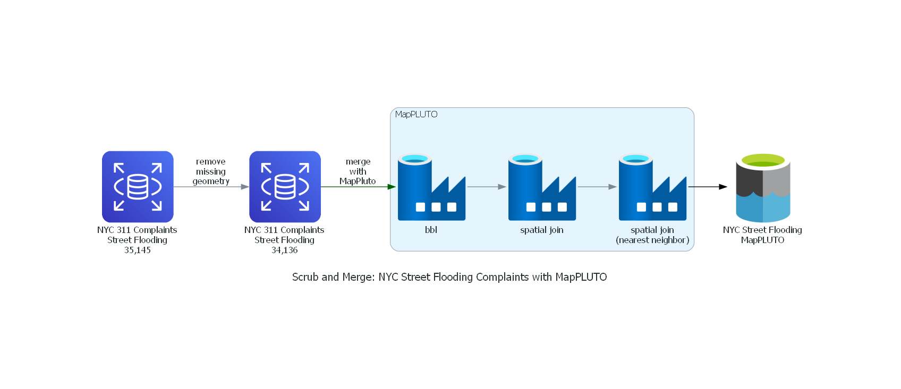

ETL Diagram#
Process of downloadind, cleaning, merging NYC street flooding service requests with MapPLUTO data.
Import Libraries#
Standard Libraries#
import json
External Libraries#
from diagrams import Cluster, Diagram, Edge
from diagrams.aws.database import RDS
from diagrams.onprem.compute import Server
from diagrams.azure.database import DataLake, DataFactory
Define Variables#
data_stats_json_input = 'data/data-stats.json'
Get Stats#
with open(data_stats_json_input, 'r') as read_json:
data_stats = json.load(read_json)
Build Diagram#
with Diagram("\nScrub and Merge: NYC Street Flooding Complaints with MapPLUTO",
filename = 'img/scrub-process-diagram',
outformat = 'png',
show=False):
street_flood_orig = RDS(f"NYC 311 Complaints\nStreet Flooding\n{data_stats['street_flood_orig']:,}")
street_flood_clean = RDS(f"NYC 311 Complaints\nStreet Flooding\n{data_stats['street_flood_clean']:,}")
with Cluster("MapPLUTO"):
mappluto = [
DataFactory("bbl"),
DataFactory("spatial join"),
DataFactory("spatial join\n(nearest neighbor)")
]
mappluto[2] >> Edge(color="black") >> DataLake('NYC Street Flooding\nMapPLUTO')
street_flood_clean \
>> Edge(color="darkgreen", label = 'merge\nwith\nMapPluto') \
>> mappluto[0] \
>> mappluto[1] \
>> mappluto[2]
street_flood_orig \
>> Edge(label = 'remove\nmissing\ngeometry') \
>> street_flood_clean
